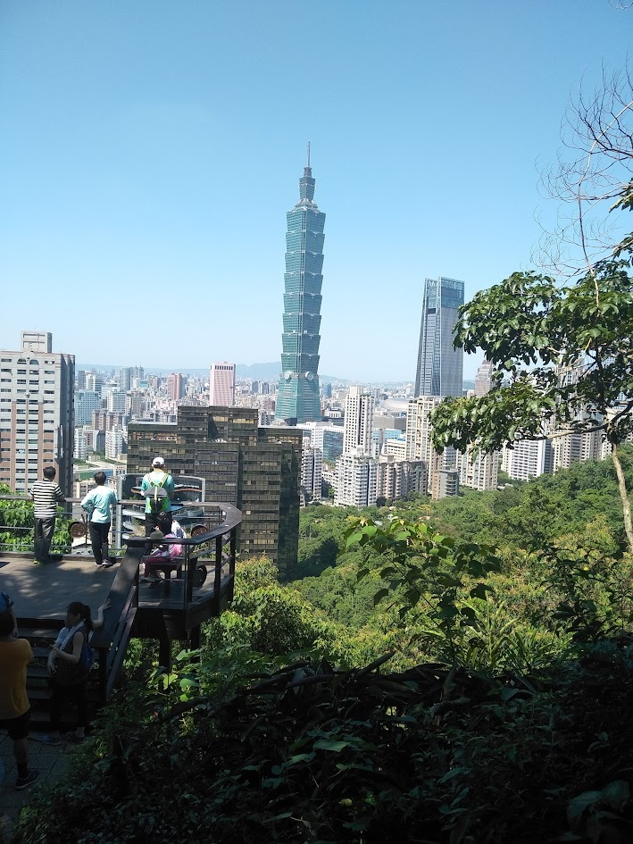
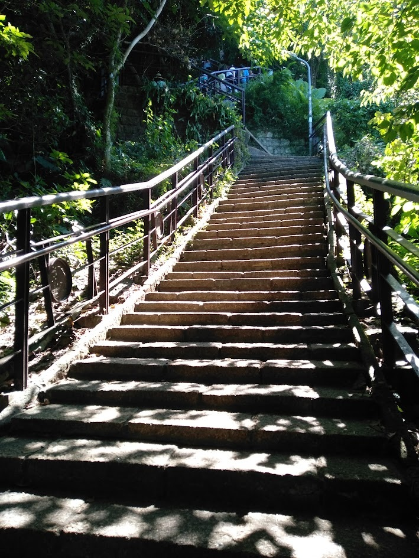
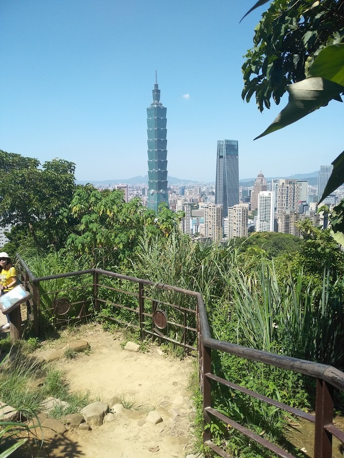
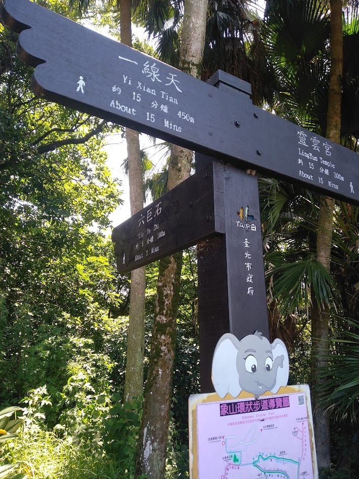
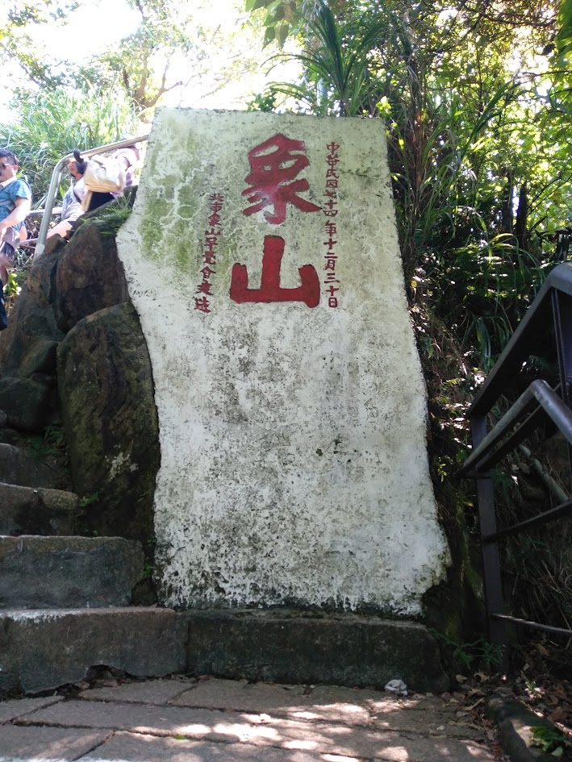
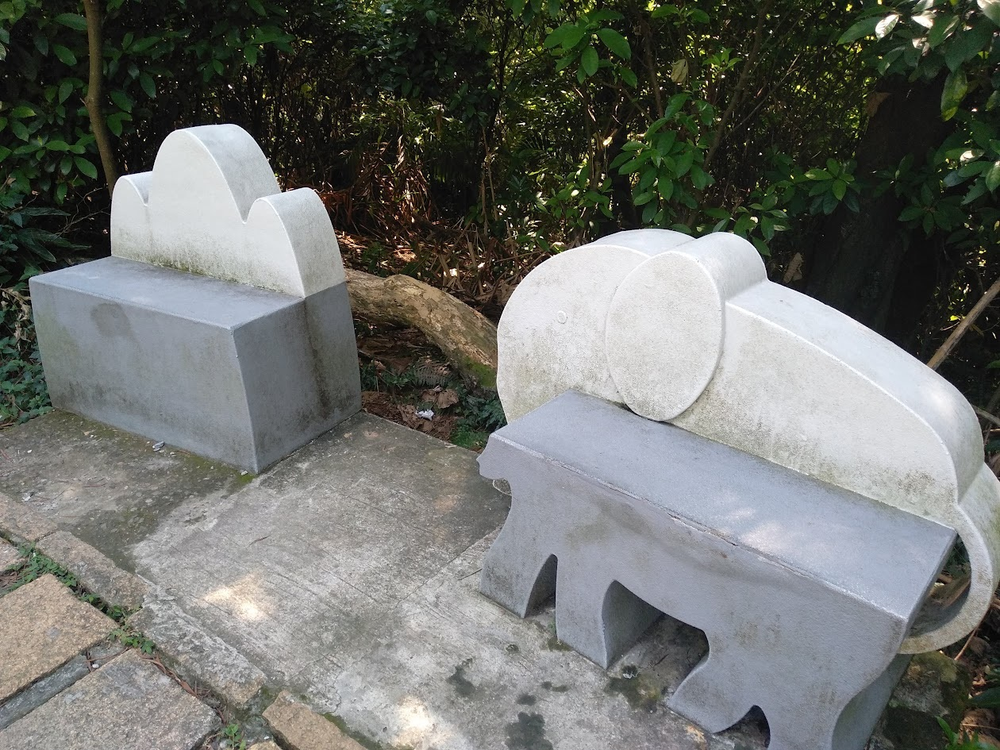
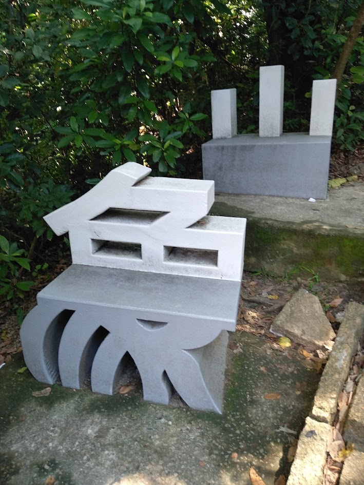
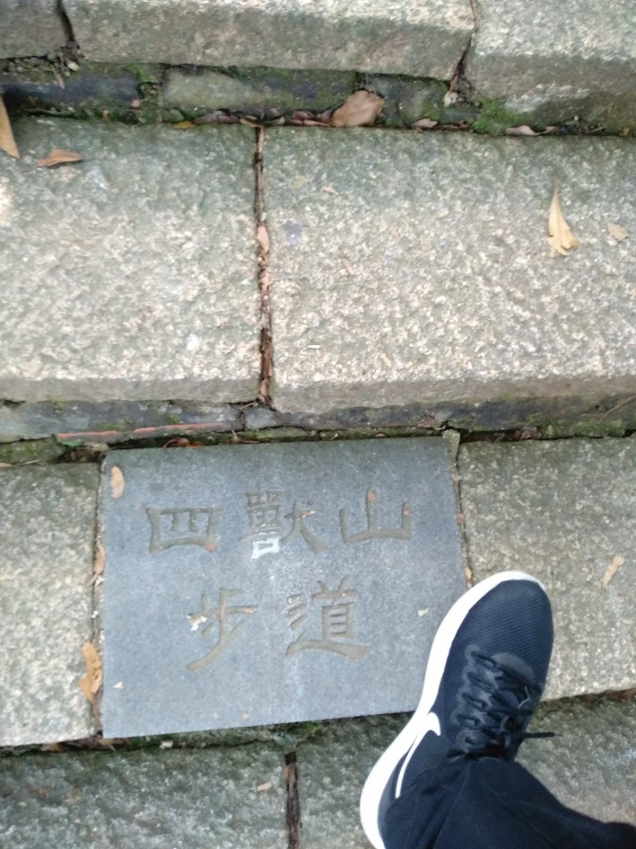

G011 · 捷運輕旅行／森林步道 · V1.0 · 2026/11/25
象山親山步道｜一步一風景，象山慢慢行
走進山林，遇見台北最美的天空。

部分路段及設施封閉，攝手平台預計2026年12月底前開放，仍須確認最新公告。登山入口及六巨石周邊也有改善工程，請依現場改道，不跨越圍籬。
市府封閉公告 工程進度公告捷運交通
淡水信義線 R02 象山站2號出口，經象山公園、信義路五段150巷前往靈雲宮登山口。建議預留10–15分鐘，實際依個人步速。免費健行。
Google Maps 步行至登山口原路折返健行
- 象山站2號出口
- 象山公園、信義路五段150巷
- 靈雲宮登山口
- 沿開放石階步道上行，視現場狀況前往六巨石或觀景區
- 依體力折返，回象山站
建議預留1.5–2小時（規劃估計，非實測），施工或休息可能延長時間。階梯較陡，並非無障礙路線。不必登頂。
八張象山走訪實拍
以下為過往親自拍攝的照片，非當日路況。點擊可放大。















水哥旅行心得
假日喜歡親近自然，隨著年紀漸長，更覺得健康與能自由走動的幸福值得珍惜。爬山不必急著抵達終點，累了就停下來歇一歇，依照自己的步調前進，也能遇見很美的風景。
旅行不一定要走得遠；能讓身心舒暢、在平凡日子裡多留下一些笑容的地方，就是我最想推薦的好去處。
行前提醒
穿防滑鞋、攜帶飲水，雨後石階容易濕滑。避開酷熱與雷雨，夜間須備照明。建議出站先使用捷運站廁所；不要跨越工區，垃圾自行帶下山。
常見問題
象山搭捷運哪站？
R02象山站2號出口。需要門票嗎？
公共步道免費。新手適合嗎？
階梯密集，請依體力安排折返，不必爬到山頂。六巨石與攝手平台現在能去嗎？
部分區域施工，依市府及現場公告為準。資料來源
臺北旅遊網交通與步道介紹 · 大地工程處封閉公告 · 大地工程處工程進度 · 2026年9月其他旅客實走參考。查證日期2026/11/25。